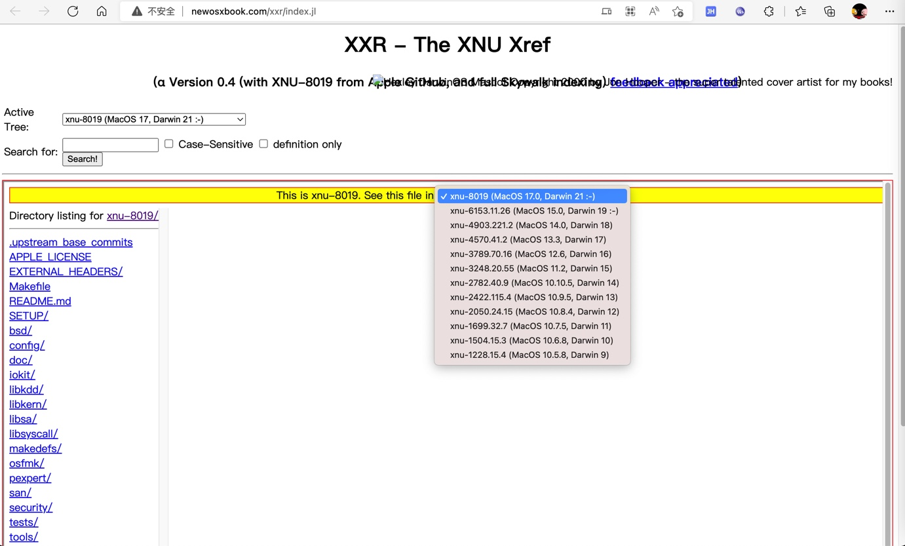

iOS逆向常涉及内容
在iOS逆向期间，常涉及到很多Apple苹果相关的开发资料，整理如下供参考。
ObjC的类
UIDevice
UIDevice | Apple Developer Documentation
xnu
由于xnu很重要，iOS逆向期间经常涉及到，所以单独介绍相关内容：
查看自己的xnu版本
对于自己的越狱手机，此处的iPhone7，去查看对应的xnu的版本：
➜ ~ ssh root@192.168.0.33
iPhone7:~ root# uname -a
Darwin iPhone7 19.6.0 Darwin Kernel Version 19.6.0: Sat Jun 27 04:35:37 PDT 2020; root:xnu-6153.142.1~4/RELEASE_ARM64_T8010 iPhone9,1 arm64 D10AP Darwin
此处被测的已越狱的iPhone的xnu是：
xnu-6153.142.1
去官网找对应版本的代码：
xnu Source Browser (apple.com)
没看到这个版本
-》只能找到，最接近的版本：
- xnu-6153.141.1.tar.gz
可下载下来，供后续参考研究。
iOS中的基本类型的定义
关于iOS中的很多相关的底层的类型：
- __darwin_mode_t
- __darwin_off_t
- __darwin_pid_t
的定义是：
typedef __uint16_t __darwin_mode_t; /* [???] Some file attributes */
typedef __int64_t __darwin_off_t; /* [???] Used for file sizes */
typedef __int32_t __darwin_pid_t; /* [???] process and group IDs */
来源：
- Apple的opensource
- 其他
头文件 errno.h
#define ENOTSUP 45 /* Operation not supported */
#ifndef _POSIX_SOURCE
#define EOPNOTSUPP ENOTSUP /* Operation not supported */
#define ENOTSUP 45 /* Operation not supported */
结论：
ENOTSUP=45
在线浏览xnu代码
XXR - XNU cross reference - Alpha (newosxbook.com)

man手册文档
前面介绍的
Apple 函数 man手册 总入口：API Reference: iOS Manual Pages (apple.com)
中有很多，iOS逆向期间，常常会涉及到的一些API或命令，整理如下：
- Section 2: system calls and error numbers
- ENOMEM 错误码定义
- 12 = ENOMEM Cannot allocate memory
- The new process image required more memory than was allowed by the hardware or by system-imposed mem-ory memory ory management constraints. A lack of swap space is normally temporary; however, a lack of core is not. Soft limits may be increased to their corresponding hard limits.
- 12 = ENOMEM Cannot allocate memory
- stat64
- ENOMEM 错误码定义
- Section 3: C libraries
iPhone iOS SDK 源码
- iPhoneOS13.0.sdk
改机相关
sysctl相关
- 苹果官网文档
- sysctlbyname
- sysctl
- man手册
- 源码
- 其他
其他
iOS中 属性列表 Property List = plist
C语言相关开发整理和心得
gcc
编译时-Wxxx的参数：
clang
编译时参数：